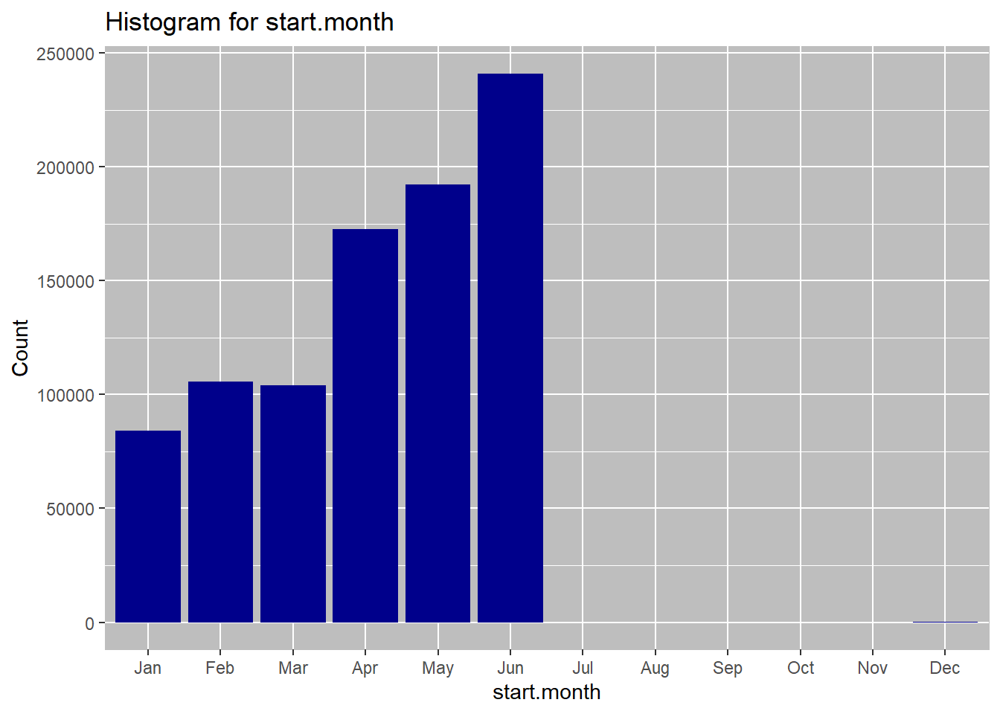
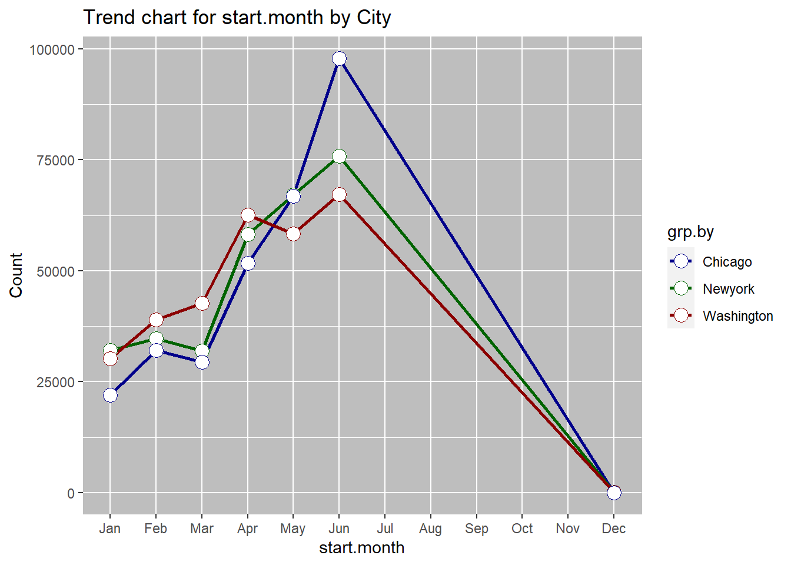
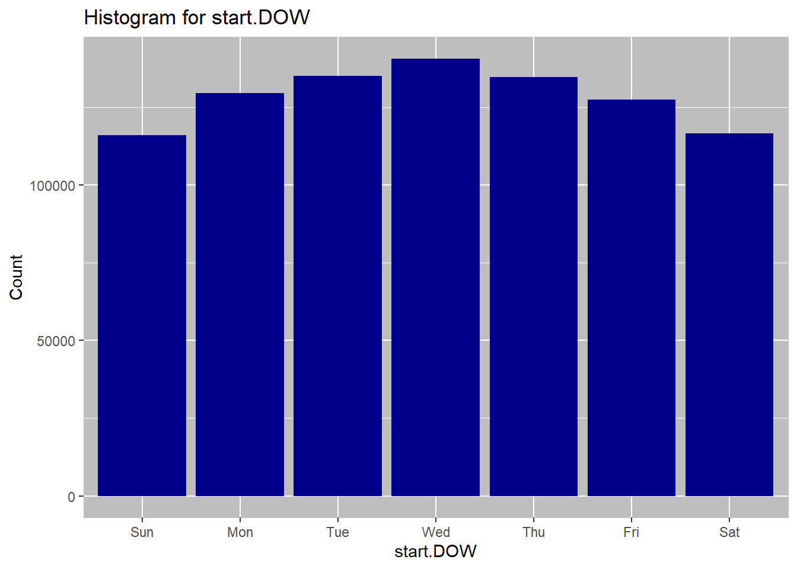
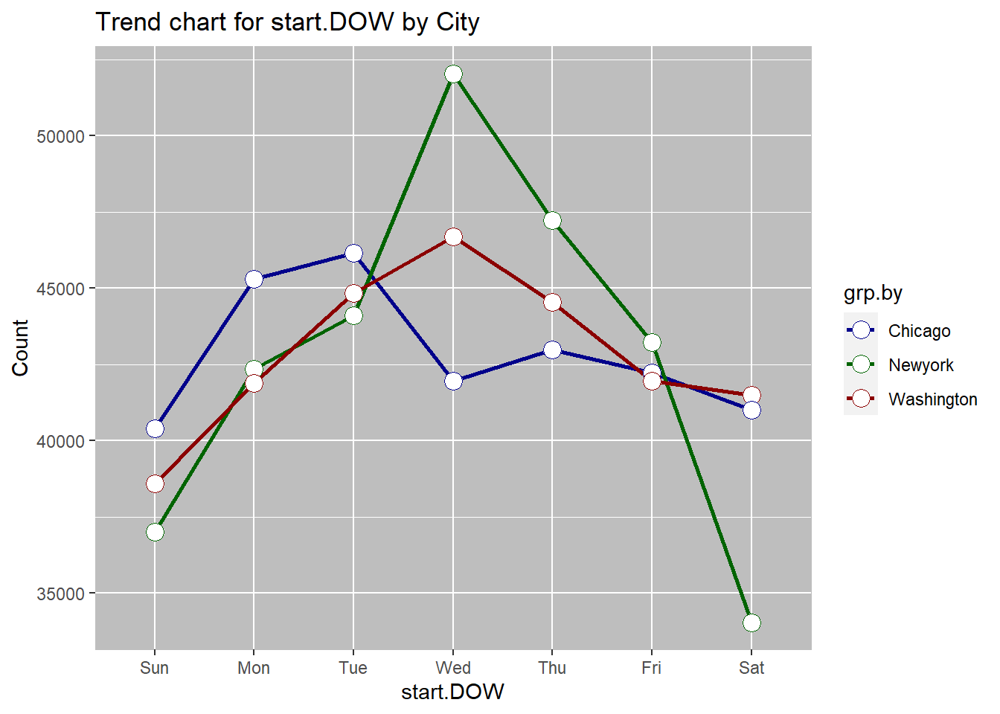
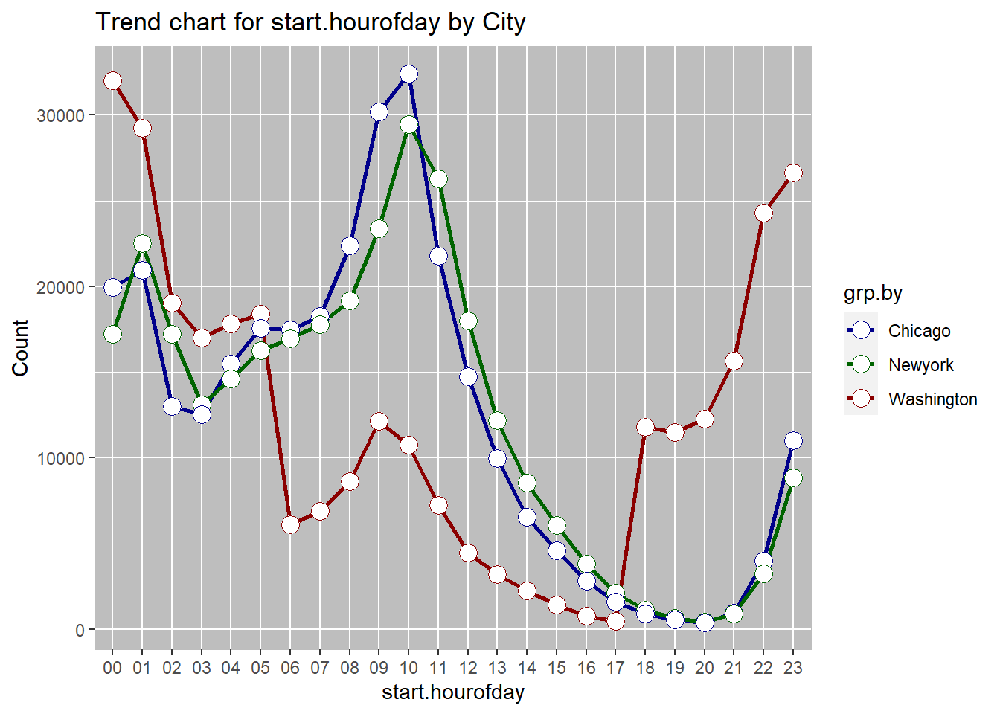

This project was completed as a part of the udacity data science with R nano degree program. The project goal was to formulate and answer some questions using the bikeshare data from three US cities.
What is the most common month ? What is the most common day of week? What is the most common hour of day?
In the first R code chunk, I used data.table library to read only the columns of interest, and to create a new column ‘City’ (fill it with values Chicago, Newyork and Washington respectively) for all three data sets. I then combined all of the data tables into one using rbind. Finally, I used the stringr replace all function for replacing the spaces in column names with a dot. This wrangling work resulted in creating one table for creating all of the summaries and visualizations needed to answer this question.
ch <- fread("Data/chicago.csv", select = c(2,3,4)) # read csv as data table
ch[,"City":="Chicago"]
ny <- fread('Data/new-york-city.csv', select = c(2,3,4))
ny[,"City":= "Newyork"]
wa <- fread('Data/washington.csv', select = c(2,3,4))
wa[,"City":= "Washington"]
dt <- rbind(ch,ny,wa) #combine data tables
names(dt) <- str_replace_all(names(dt), c(" "=".")) #replace empty space in column name with a .
strt <- as.POSIXct(dt$Start.Time) #POSIX for timestamps as calendar times
dt[, "start.month" := strftime(strt, "%b")] #extracting month from timestamp and storing in a new column start.month
dt[, "start.DOW" := strftime(strt, "%a")] #extracting day of week from timestamp and storing in a new column start.DOW
dt[, "start.hourofday" := strftime(strt, "%H")] #extracting hour of day from timestamp and storing in a new column start.hourofdayGet.Most.Common <- function(metric, grp.by){
usr_input1<- metric
usr_input2<- grp.by
txt_usr_input1<- deparse((substitute(metric))) # only retaining the text of the argument
txt_usr_input2<-deparse((substitute(grp.by))) # only retaining the text of the argument
temp.overall<- dt[, .N, by=.(metric)] #create list of count by metric (i.e. month, DOW or hour) for the entrie table
overall <- temp.overall[, .SD[which.max(N)]] # find the highest count i.e. the most common
setnames(overall, "metric",sub('...','',txt_usr_input1)) #output table headers to reflect input text
setnames(overall, "N", "Overall_ Count")
temp.bygrp <- dt[, .N, by=.(grp.by, metric)] # create count grouped by city and the metric
bygrp <-temp.bygrp[, .SD[which.max(N)], by =grp.by] #find max
setnames(bygrp, "grp.by",sub('...','',txt_usr_input2)) #rename headers
setnames(bygrp, "metric",sub('...','',txt_usr_input1))
setnames(bygrp, "N", "Grouped_ Count")
result <- list("Most Common Overall"=overall, "Most Common Grouped"= bygrp) #combine outputs into a list since a function can only have
return(result)
}
Get.Most.Common(dt$start.month, dt$City)## $`Most Common Overall`
## start.month Overall_ Count
## 1: Jun 241060
##
## $`Most Common Grouped`
## City start.month Grouped_ Count
## 1: Chicago Jun 97926
## 2: Newyork Jun 75895
## 3: Washington Jun 67239Get.Most.Common(dt$start.DOW, dt$City)## $`Most Common Overall`
## start.DOW Overall_ Count
## 1: Wed 140682
##
## $`Most Common Grouped`
## City start.DOW Grouped_ Count
## 1: Chicago Tue 46156
## 2: Newyork Wed 52040
## 3: Washington Wed 46684Get.Most.Common(dt$start.hourofday,dt$City)## $`Most Common Overall`
## start.hourofday Overall_ Count
## 1: 01 72670
##
## $`Most Common Grouped`
## City start.hourofday Grouped_ Count
## 1: Chicago 10 32415
## 2: Newyork 10 29468
## 3: Washington 00 32003#function to calculate frequency tables and plots by metric
#1-deparse will get text out of user input - for creating dynamic plot labels
#2-Overall frequency followed by bygrp(by city) frequency table using data.table functions
#3 - c.palette specifies color palette for the bygrp(by city) plots.
#4- create a list of ggplot items that are common to all plots.
#5 -Conditional (if else) to order by monthor by day - do this forboth overall and bygrp(by city)plots.
freq.categorical <- function(metric, grp.by){
txt_usr_input1<- sub('...','',deparse((substitute(metric)))) #1
txt_usr_input2<- sub('...','',deparse((substitute(grp.by))))
temp.overall<- dt[, .N, by=.(metric)]#summarizing data
overall <- temp.overall[order(-N)] #2
temp.bygrp <- dt[, .N, by=.(grp.by, metric)]
bygrp <- temp.bygrp[order(dt, -N)] #2
c.palette <- c("darkblue", "darkgreen", "darkred")
#4 (for overall)
p<- list(
geom_bar(stat = "identity", fill = "darkblue"),
ggtitle(paste0('Histogram for ', txt_usr_input1)),
scale_y_continuous(labels = function(x) format(x, scientific = FALSE)),
th1,labs(x = paste0(txt_usr_input1), y = 'Count')
)
#4 (for bygrp)
p2 <- list(geom_line(size = 1) ,
scale_y_continuous(labels = function(x) format(x, scientific = FALSE)),
geom_point( size=4, shape=21,fill="white"),
scale_color_manual(values = c.palette), th1,
ggtitle(paste0('Trend chart for ', txt_usr_input1, ' by ', txt_usr_input2)),
labs(x = paste0(txt_usr_input1), y = 'Count')
)
# 5 conditional
#if DOW (string) in the argument, then factor the metric column with levels as ordered days of week with Sunday being first day
if(str_detect(txt_usr_input1, "DOW")) {
overall$metric <- factor(overall$metric,
levels =c("Sun", "Mon", "Tue", "Wed", "Thu", "Fri", "Sat"))
overall<- overall[order(overall$metric)]
bygrp$metric <- factor(bygrp$metric,
levels =c("Sun", "Mon", "Tue", "Wed", "Thu", "Fri", "Sat"))
bygrp<- bygrp[order(bygrp$metric)]
pltx <- ggplot(data=overall, aes_string(x=names(overall)[1], y = names(overall)[2])) + p
plt2x<-ggplot(data=bygrp, aes_string(x=names(bygrp)[2], y=names(bygrp)[3], group = names(bygrp)[1], colour = names(bygrp)[1])) +p2
print(pltx)
print(plt2x)
#elseif month(string) in the argument, then use the month.abb function to order month JAn - DEc
}else if(str_detect(txt_usr_input1, "month")){
pltx <-ggplot(data=overall, aes_string(x=names(overall)[1], y = names(overall)[2])) +
scale_x_discrete(limits = month.abb) + p
plt2x<-ggplot(data=bygrp, aes_string(x=names(bygrp)[2], y=names(bygrp)[3], group = names(bygrp)[1], colour = names(bygrp)[1])) +
scale_x_discrete(limits = month.abb) + p2
print(pltx)
print(plt2x)
# else plot and print
}else{
pltx <- ggplot(data=overall, aes_string(x=names(overall)[1], y = names(overall)[2])) + p
plt2x<-ggplot(data=bygrp, aes_string(x=names(bygrp)[2], y=names(bygrp)[3], group = names(bygrp)[1], colour = names(bygrp)[1])) +p2
print(pltx)
print(plt2x)
}
result <- list("Overall"=overall, "Grouped"= bygrp) #combining summary result
return(result)
}
freq.categorical(dt$start.month, dt$City)
## $Overall
## metric N
## 1: Jun 241060
## 2: May 192159
## 3: Apr 172609
## 4: Feb 105773
## 5: Mar 104074
## 6: Jan 84186
## 7: Dec 139
##
## $Grouped
## grp.by metric N
## 1: Chicago Jun 97926
## 2: Newyork Jun 75895
## 3: Washington Jun 67239
## 4: Newyork May 67051
## 5: Chicago May 66816
## 6: Washington Apr 62651
## 7: Washington May 58292
## 8: Newyork Apr 58247
## 9: Chicago Apr 51711
## 10: Washington Mar 42619
## 11: Washington Feb 38975
## 12: Newyork Feb 34751
## 13: Chicago Feb 32047
## 14: Newyork Jan 32012
## 15: Newyork Mar 31983
## 16: Washington Jan 30172
## 17: Chicago Mar 29472
## 18: Chicago Jan 22002
## 19: Newyork Dec 61
## 20: Washington Dec 52
## 21: Chicago Dec 26
## grp.by metric Nfreq.categorical(dt$start.DOW, dt$City)
## $Overall
## metric N
## 1: Sun 115985
## 2: Mon 129529
## 3: Tue 135083
## 4: Wed 140682
## 5: Thu 134752
## 6: Fri 127429
## 7: Sat 116540
##
## $Grouped
## grp.by metric N
## 1: Chicago Sun 40390
## 2: Washington Sun 38582
## 3: Newyork Sun 37013
## 4: Chicago Mon 45291
## 5: Newyork Mon 42348
## 6: Washington Mon 41890
## 7: Chicago Tue 46156
## 8: Washington Tue 44833
## 9: Newyork Tue 44094
## 10: Newyork Wed 52040
## 11: Washington Wed 46684
## 12: Chicago Wed 41958
## 13: Newyork Thu 47234
## 14: Washington Thu 44545
## 15: Chicago Thu 42973
## 16: Newyork Fri 43230
## 17: Chicago Fri 42236
## 18: Washington Fri 41963
## 19: Washington Sat 41503
## 20: Chicago Sat 40996
## 21: Newyork Sat 34041
## grp.by metric Nfreq.categorical(dt$start.hourofday, dt$City)
## $Overall
## metric N
## 1: 01 72670
## 2: 10 72636
## 3: 00 69154
## 4: 09 65736
## 5: 11 55292
## 6: 05 52167
## 7: 08 50178
## 8: 02 49233
## 9: 04 47922
## 10: 23 46492
## 11: 07 42907
## 12: 03 42633
## 13: 06 40576
## 14: 12 37254
## 15: 22 31537
## 16: 13 25362
## 17: 21 17540
## 18: 14 17355
## 19: 18 13830
## 20: 20 13141
## 21: 19 12697
## 22: 15 12085
## 23: 16 7398
## 24: 17 4205
## metric N
##
## $Grouped
## grp.by metric N
## 1: Chicago 10 32415
## 2: Washington 00 32003
## 3: Chicago 09 30183
## 4: Newyork 10 29468
## 5: Washington 01 29228
## 6: Washington 23 26643
## 7: Newyork 11 26273
## 8: Washington 22 24293
## 9: Newyork 09 23395
## 10: Newyork 01 22512
## 11: Chicago 08 22368
## 12: Chicago 11 21765
## 13: Chicago 01 20930
## 14: Chicago 00 19933
## 15: Newyork 08 19164
## 16: Washington 02 19024
## 17: Washington 05 18372
## 18: Chicago 07 18240
## 19: Newyork 12 18006
## 20: Washington 04 17818
## 21: Newyork 07 17770
## 22: Chicago 05 17547
## 23: Chicago 06 17496
## 24: Newyork 00 17218
## 25: Newyork 02 17207
## 26: Washington 03 16991
## 27: Newyork 06 16969
## 28: Newyork 05 16248
## 29: Washington 21 15655
## 30: Chicago 04 15493
## 31: Chicago 12 14764
## 32: Newyork 04 14611
## 33: Newyork 03 13097
## 34: Chicago 02 13002
## 35: Chicago 03 12545
## 36: Washington 20 12281
## 37: Newyork 13 12201
## 38: Washington 09 12158
## 39: Washington 18 11783
## 40: Washington 19 11486
## 41: Chicago 23 10997
## 42: Washington 10 10753
## 43: Chicago 13 9970
## 44: Newyork 23 8852
## 45: Washington 08 8646
## 46: Newyork 14 8550
## 47: Washington 11 7254
## 48: Washington 07 6897
## 49: Chicago 14 6551
## 50: Washington 06 6111
## 51: Newyork 15 6067
## 52: Chicago 15 4591
## 53: Washington 12 4484
## 54: Chicago 22 4001
## 55: Newyork 16 3813
## 56: Newyork 22 3243
## 57: Washington 13 3191
## 58: Chicago 16 2806
## 59: Washington 14 2254
## 60: Newyork 17 2144
## 61: Chicago 17 1592
## 62: Washington 15 1427
## 63: Newyork 18 1144
## 64: Chicago 21 952
## 65: Newyork 21 933
## 66: Chicago 18 903
## 67: Washington 16 779
## 68: Newyork 19 667
## 69: Chicago 19 544
## 70: Washington 17 469
## 71: Newyork 20 448
## 72: Chicago 20 412
## grp.by metric NJune is the most common rental month overall, as well as for each of the cities. This may be driven by warm summer temperatures, tourists visitings due to school holidays etc. Wednesday is the most common day for start of the rentals overall. When broken down by the city, we see that wednesday is still the most comon rental start day for New York and washington, but for Chicgo the most common day of retnal start is Tuesday. weekday rentals may be higher due to workers commuting to work. Hourly data shows a bimodal distribution overall with 08:00am and 5:00pm being the most popular times for travel. This, again is likely due to the workers commuting to and from work at these hours. Trend by city shows the same dual peaks. The 5:00pm peak for washington is small, which may be due to overnight rentals.